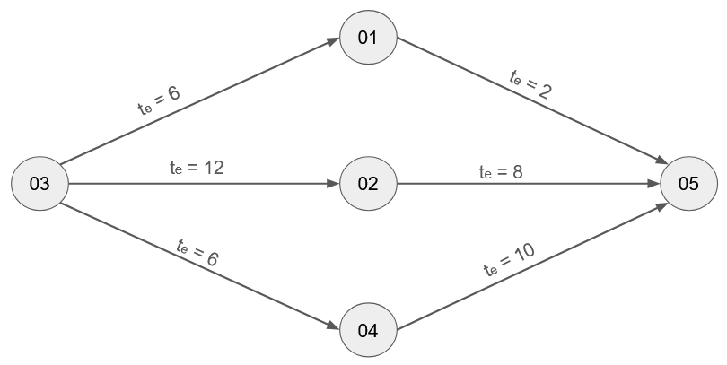

Depois de estabelecermos nossas redes PERT, mostrando a inter-relação entre atividades e eventos, nós obtivemos o cálculo de três estimativas de tempo (a, m e b) para cada atividade. Depois, calculamos o te de cada atividade e pusemos seus valores na rede PERT acima da linha de atividade que eles representam. Abaixo está um exemplo do que queremos dizer:

NOTA: Todos os te‘s nesta rede são em semanas
Nesta rede, o Evento 2 é sucessor e o Evento 1 é o antecessor da atividade que os liga. Esta atividade tem um te (tempo esperado de conclusão) de 6 semanas.
Usando a rede acima como modelo, faça uma rede com as seguintes informações:
Evento Antecessor Evento Sucessor te Montagem das unidades 1 2 finais Recrutamento o pessoal de 1 3 campo Levantamento da área a 1 4 construir Testes e experiências das 2 5
unidades finais
Treinamentos dos 3 5 engenheiros de campo
Construção dos abrigos da 4 5 área a construir
Vire para a página 72 e veja as respostas.